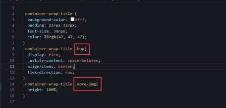
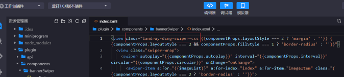
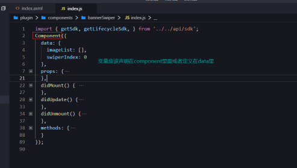
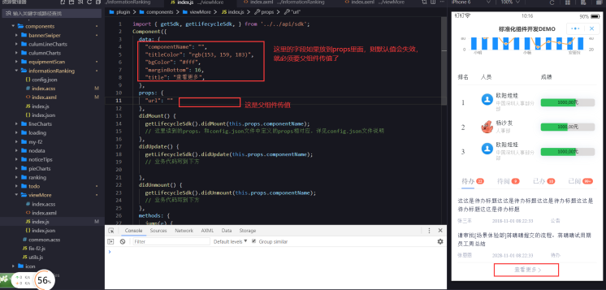
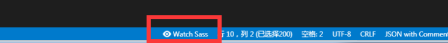
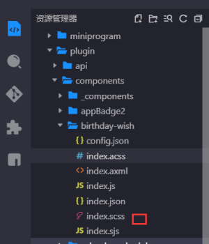

钉钉标准组件的默认规范：
满栏/非满栏：padding/margin: 0 32rpx;
圆角：12rpx
默认高度：100px-375px
从目前的众多项目的实践来看，组件的单位能使用rpx单位优先使用rpx单位（字体也可使用rpx）。
自定义组件规范
1、目前发现组件间没有类似vue style那样的scope属性进行样式作用域隔离，所以目前最好的方式是通过不一样的类名来区分组件，如要写成.container-wrap-title .box，而不是 .box ，以免污染全局的css。以及进行样式的设计。
如下图：


2、不止是样式，js也是一样，比如，最好不要把变量声明在Component外，否则当在门户上使用到两个同样的组件时，变量就会被覆盖，无法保持独立性，所以应该把变量声明在Component内或者挂载在data里，如下图：

3、之前的组件开发，对于通过配置来更改css中的font-size、各种color 等样式的，直接在axml里的style里写，比如：style=”color:;” 。这样做虽然能达到目的，但是会使得axml变的很难看，维护起来比较棘手；所以现在新开发的组件，涉及到通过配置来更改样式的，优先使用css中的 “var(变量,默认值)”。关于css中的变量的用法：https://developer.mozilla.org/zh-CN/docs/Web/CSS/–*
在我们组件开发中的用法大概是这样的
1 | //js文件 |
1 | // axml文件使用 |
1 | // scss文件中使用 |
注意事项
1：组件的名称问题，对于其他外部开发者开发的组件，以组织名称开头，以免与目前主公司的其他组件冲突
1 | { |
2、对于不注册在门户设计器上的组件，即只有acss、axml、js、json四个文件，没有config.json文件；也就是只在其他组件中被引用的，对于这类组件需要特别注意：
这里的组件的开发就跟钉钉的小程序开发很像了，axml里读取props里的值不再像插件开发那样写componentProps.xxx，而是直接写xxx，而且在编辑器里props里写默认值是生效的，但是到了门户设计器，到了真实的手机环境的时候，这个默认值就会失效

3、使用rpx等单位时需注意某些情况下的精度问题；比如画一个正圆时，宽高使用rpx，圆角设置50%；在手机上会出现有些圆不圆的情况，这是由于rpx转成rem，然后再在手机上转成px时会存在精度丢失（手机上有二倍屏，三倍屏），宽高使用px做单位就没这个问题。
由于组件间没有像vue那样的样式 scope隔离，所以组件间需要用组件名作为顶级选择器，嵌套使用，且顶级选择器不能重复，防止组件间样式冲突。
建议使用scss嵌套书写css，提高开发效率，也不容易遗漏顶级选择器，但是由于acss不支持scss，我们需要用工具来实现。
1、首先选择vscode来开发，安装Live Sass Compiler 插件
2、配置settings.json
1 | { |
3、点击vscode底部的watch按钮，监听文件变化，自动编译scss文件为acss文件

4、完整组件至少包含6个文件。.sjs文件作为axml的辅助，详情可查看钉钉小程序开发文档

关于组件新增、删除、修改config.json文件的主意事项
1：删除配置项：参考钉钉插件开发文档的说法，config文件的配置避免删除配置项，否则有可能引起已经在使用中的客户门户报错
2：修改配置项：修改配置项的名称、不改变原来配置类型的情况下增加配置选项（如增加下拉选项），这都没有什么风险；但是最好不要修改配置项的类型，比如原来是下拉框，改成了输入框，有可能引起已经在使用中的客户门户报错
3：新增配置项：钉钉会把组件的配置面板的所有参数的值存储到数据库，但是对于新增配置项，不会自动更新新增配置项的默认值，也就是默认值为空。因此要使已经在使用中的客户门户也对新增的默认值生效的话，必须要重新拖入组件，重新发布门户。所以，对于新增配置项，要做好兼容处理。